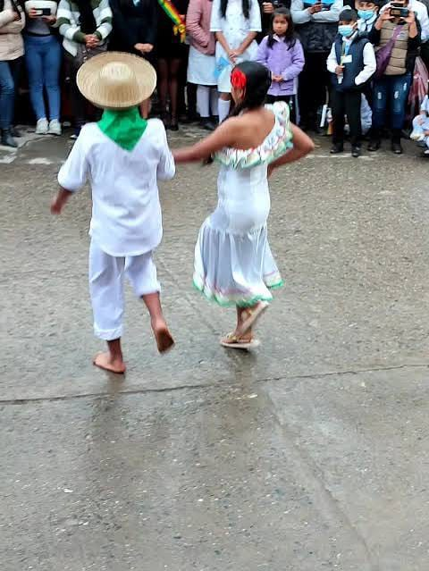
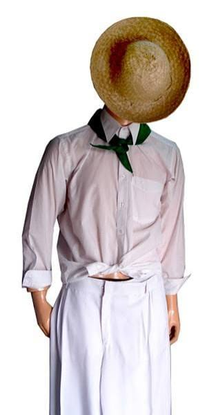
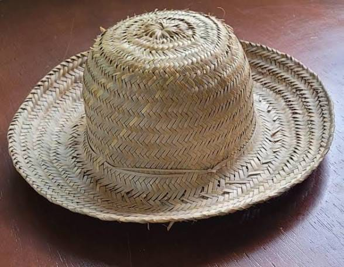

Vestimentas Tradicionales del Beni
Prendas que expresan la identidad y las costumbres benianas.
La vestimenta tradicional beniana
El departamento del Beni posee una gran diversidad cultural, formada por pueblos indígenas y comunidades de los llanos amazónicos. Su vestimenta tradicional está relacionada con el clima cálido, las actividades cotidianas y las celebraciones culturales. Por eso se utilizan prendas frescas, sencillas y cómodas, aunque sus características pueden variar entre pueblos y municipios.
En las presentaciones culturales se pueden observar vestidos, camisas, pantalones, sombreros y accesorios que reflejan la historia y las tradiciones de la región.

1. Vestido tradicional
En algunas comunidades y presentaciones culturales se utilizan vestidos ligeros, generalmente de telas frescas y diseños coloridos. Representan la identidad y las costumbres de las mujeres de la región.

2. Camisa
Las camisas de tela liviana son adecuadas para el clima cálido del Beni. En actividades culturales pueden acompañarse con detalles o accesorios que representan las costumbres locales.

3. Pantalón
El pantalón, generalmente de corte sencillo y cómodo, forma parte de la vestimenta masculina utilizada en distintas actividades y representaciones tradicionales.

4. Sombrero
El sombrero ayuda a proteger del sol durante las actividades al aire libre. También puede formar parte de la vestimenta que se presenta en actos culturales y festividades.

5. Calzado
El calzado suele ser práctico y cómodo para caminar y realizar actividades cotidianas. En algunas representaciones se utilizan sandalias u otros modelos sencillos.
¿Qué representa la vestimenta beniana en conjunto?
En conjunto, estas prendas reflejan la adaptación al clima cálido de los llanos, la vida cotidiana y la diversidad cultural del Beni. También ayudan a mantener vivas las costumbres y a transmitir la identidad de sus pueblos de una generación a otra.
💡 Dato curioso
El Beni reúne diversas culturas indígenas y tradiciones de los pueblos amazónicos y de los llanos. Por eso no existe una sola vestimenta que represente por igual a todos sus municipios: las prendas y los accesorios pueden cambiar según cada comunidad y celebración.